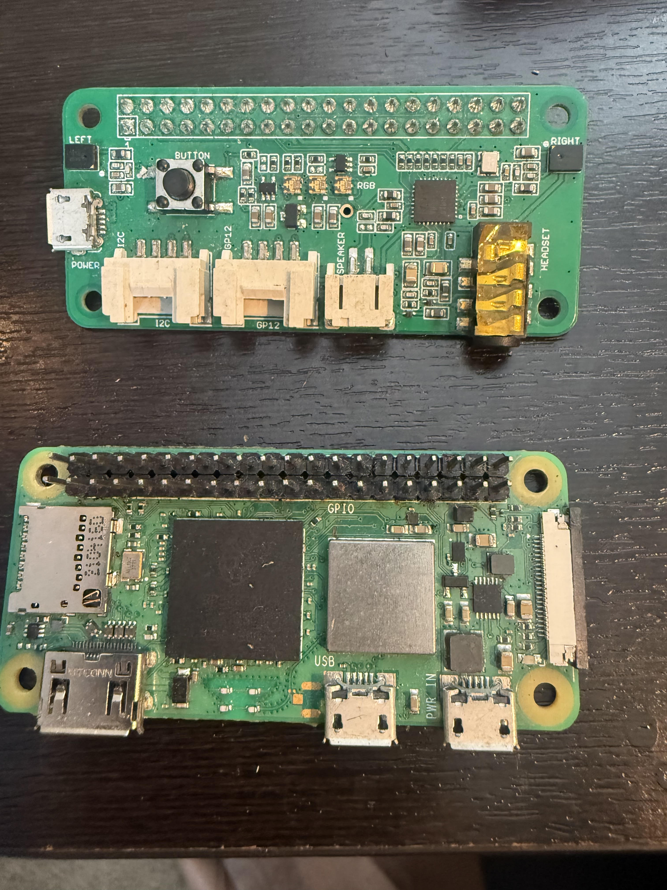

Power
Battery, buck converters, drive power, fused branches, and serviceable access panels.
 K2Aley GAR-BOT
K2Aley GAR-BOT

3D printing, repair workflows, and robot systems
A hands-on K2Aley build platform for guided diagnostics, 3D printer support, robot documentation, custom printed hardware, and repeatable shop workflows.
Status: GAR-BOT is treated as a dry-use prototype unless every exposed board, connector, servo, wire entry, and LED module is enclosed, gasketed, gland-sealed, and leak-tested.
Build Profile
K2Aley organizes the robot, 3D printed body hardware, wiring notes, repair workflows, and tune-up documents into a single build package.
GAR-BOT uses the same practical pattern across the site: capture the problem, diagnose the cause, repair the system, and record the working settings.
The project style is direct, shop-ready, and visual: real parts, real files, and clear status notes instead of vague product claims.
K2Aley.com can host the robot package, customer service menu, downloads, wiring notes, 3D print files, and future GAR-BOT updates.
Robot Systems
Battery, buck converters, drive power, fused branches, and serviceable access panels.
Raspberry Pi 5, Wi-Fi setup, LoRa path, browser controls, and local AI support notes.
Four-wheel direct-drive layout with protected wiring routes and printable motor shields.
Two articulated front claws with controller board protection, covers, and fit documentation.

Physical Reference
The visual direction follows the existing GAR-BOT reference: dark technical surfaces, gold highlights, full-bleed robot photography, and dense utility links for build files.

Remote and Controls
GAR-BOT can grow from a static project package into a control and diagnostic hub for robot hardware, 3D printing systems, and customer workflows.
Project Files
{kind=link}